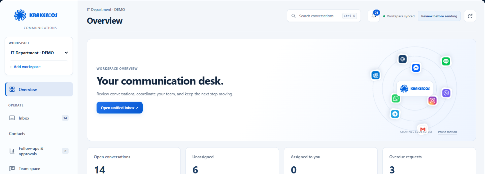

Gemeinsamer Posteingang
Website-Chat, Instagram und Messenger in einem Ablauf, mit den für Ihre Demo verbundenen Kanälen.
ITD LABS / KRAKEN COMMUNICATIONS
Gespräche, Kontakte und der nächste Schritt – mit gemeinsamem Kontext für Ihr Team.

Ansicht aus der ProduktpräsentationWebsite-Chat, Instagram und Messenger in einem Ablauf, mit den für Ihre Demo verbundenen Kanälen.
KI und Team nutzen denselben Verlauf. Zuständigkeit, Freigaben und Übergabepunkte werden festgelegt.
Kontakte, Nachverfolgung und Angebote bleiben direkt beim Gespräch – der Kontext bleibt erhalten.
Ansichten aus der Produktpräsentation. Verfügbare Module und Kanäle hängen von Konfiguration, Berechtigungen und freigegebenen Integrationen ab.